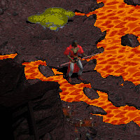
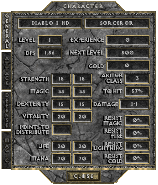
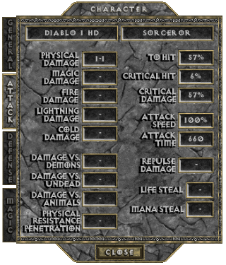
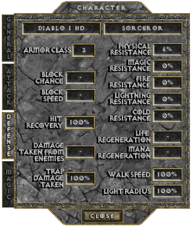
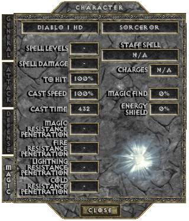

THE SORCERER
Although practitioners of the mystic arts are scarce within the often superstitious and religious lands of the West, many magi have made the pilgrimage from the Far East to see for themselves what horrors lie beneath the ruined Cathedral of Khanduras. The veiled Brotherhood of the Vizjerei, one of the eldest and most dominant mage-clans of the East, has sent many of its acolytes to observe the dark events unfolding in Khanduras first hand.
The Vizjerei, known for their brightly colored Turinash, or spirit-robes, have taken a keen interest in both gathering knowledge of demons and seeing them slain. The Vizjerei elders hope that their acolytes will learn the secrets of the dark evil that they sense growing in the West and can destroy it. The possibility of discovering long-lost tomes of magical knowledge within the confines of the labyrinth has also captured the interest of many wandering Sorcerers.
Most magic in Khanduras is in the form of enchanted items and elixirs. The Eastern Sorcerers have developed a greater understanding of spellcasting than the other classes, and while a Vizjerei neonate knows only the simplest of spells to start, he can expect to rapidly grow in power as he discovers new incantations. All Sorcerers possess the ability to recharge spell staves by drawing power from their surroundings and channeling them through the staff.

BASE STATS
Per character level: 5 Attribute Points +1 Life +2 Mana +3% To Hit (Spell)
+0.15 Physical Damage (only at levels 8 to 60, levels 1 to 7 make up 1-1 innate damage)
-0.2% Critical Hit Chance (only at levels 1 to 5, after 5 it stops decreasing)
-0.5% Critical Hit Damage (only at levels 1 to 14, after 14 it stops decreasing)
Physical Resistance drops from 6% to 1% at level 2, to 0% at level 3
Per point in Strength: +0.18 Physical Damage +0.5% Critical Hit Damage (min 37 points)
Per point in Dexterity: +0.18 Physical Damage +0.125% Critical Hit Chance (min 57 points) +0.5% To Hit (Weapon) +0.2 Armor Class
Per point in Vitality: +1 Life
Per point in Magic: +2 Mana +0.5% To Hit (Spell)
   
PREFERRED WEAPONS
text
See THIS PAGE for more information about the Attack Speed of Staves.
SKILLS
| Name | Icon | Info |
|---|---|---|
| STAFF RECHARGE (available from start) | Effect: Utility skill that recharges one staff to it's full charges, without cost and instantly Cooldown: 5 min | |
| ELEMENTAL DRAIN (from Character Level 8) | Effect: Offensive buff that enables spells to pierce through the enemies' resistances for 8.525 sec All Resistances Penetration: 26.75% Cost: 10% + 15 Mana Cooldown: 2.5 min Synergy: Magic: All Resistances Penetration: +0.05% +0.015 sec to buff duration | |
| MANA SHIELD (from Character Level 16) | Effect: Defensive buff that turns mana into hit points and makes you a bit more physical resistant for 30 min Physical Resistance: +5% Cost: 10% Mana Synergy: Magic: Physical Resistance: +1% (for each series of 75 points) | |
| ETHERALIZE (from Character Level 24) | Effect: Defensive and offensive buff that makes you less susceptible to damage and fast-moving for 8.5 sec All Resistances: +26% (+???% per Character Level from level ) Armor Class: +51 (+???% per Character Level from level ) Attacker Takes 13.4 Damage (+0.6 per Character Levels from level 25) Walk Speed: +15% Cost: 5% + 25 Mana Cooldown: 3 min Synergy: Magic: All Resistances: +???% Armor Class: +??? Attacker Takes +??? Damage +0.015 sec to buff duration | |
| TEMPORAL SLOWDOWN (from Character Level 32) | Effect: Defensive and offensive buff with which the caster slows down time flow in order to react better in combat Time Slowed: 52% Slowdown Duration: 4.2 sec (+???% per Character Level from level ) Cost: 10% + 100 Mana Cooldown: 2 min Synergy: Magic: Time Slowed: +???% Slowdown Duration: +??? sec | |